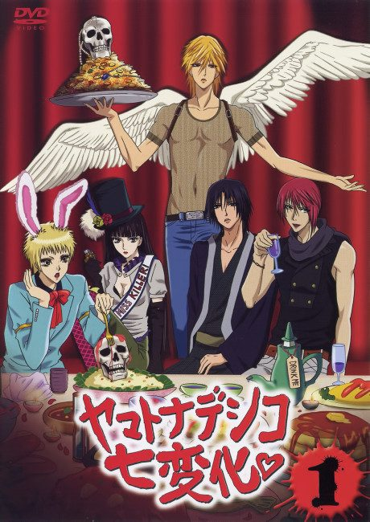

The Wallflower
ヤマトナデシコ七変化♥
After the anime, read the manga from Chapter 45.
7.3AniList score
—Animeter, no votes yet
25episodes
Anime finished. Where does the manga pick up?
Start at Chapter45
The anime ends at chapter 44 (volume 11), so start at chapter 45. The anime skips some comedic chapters, and the manga is finished.
144153 end
Season 1Start reading here